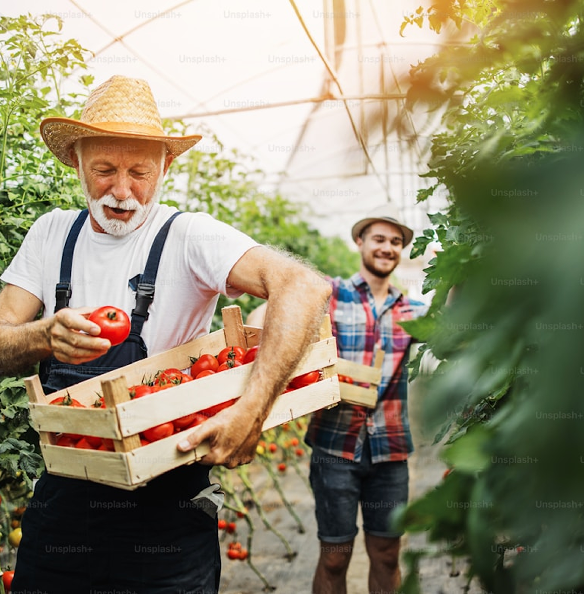
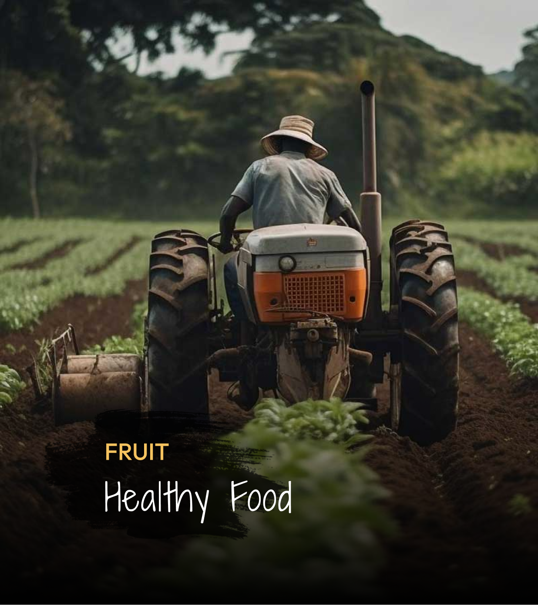
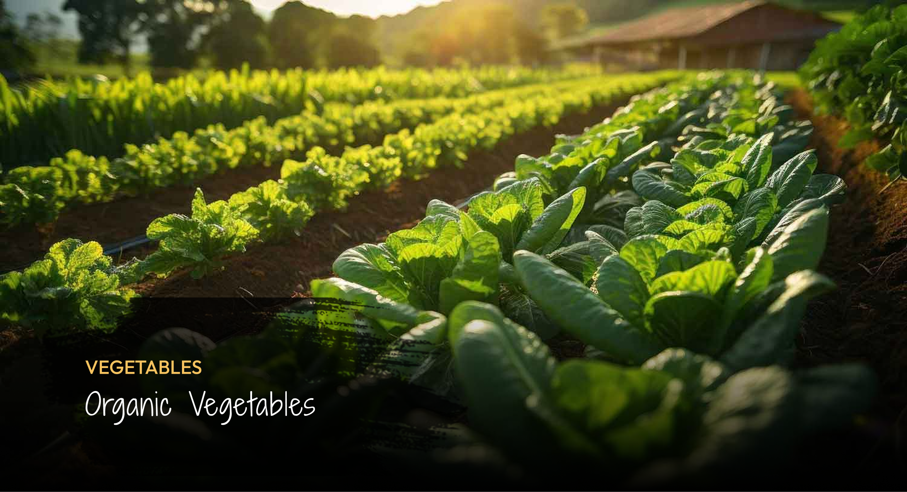
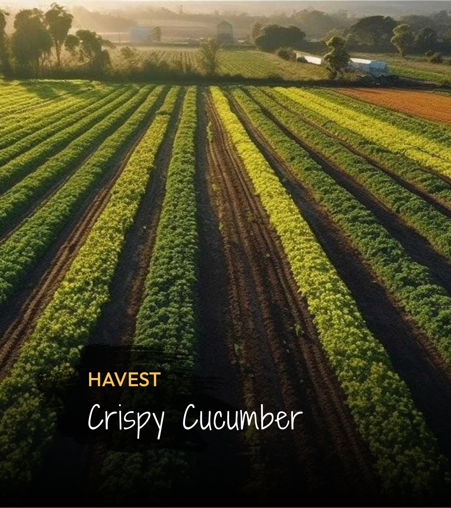
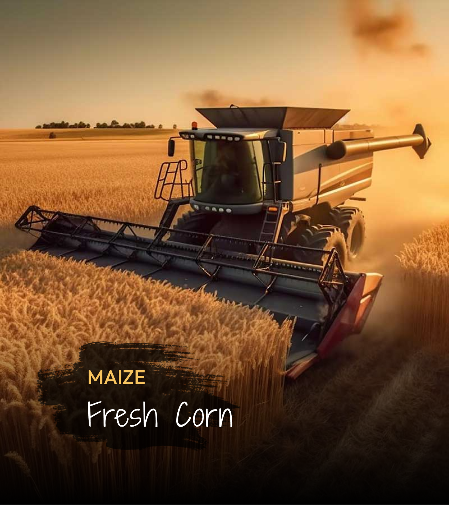
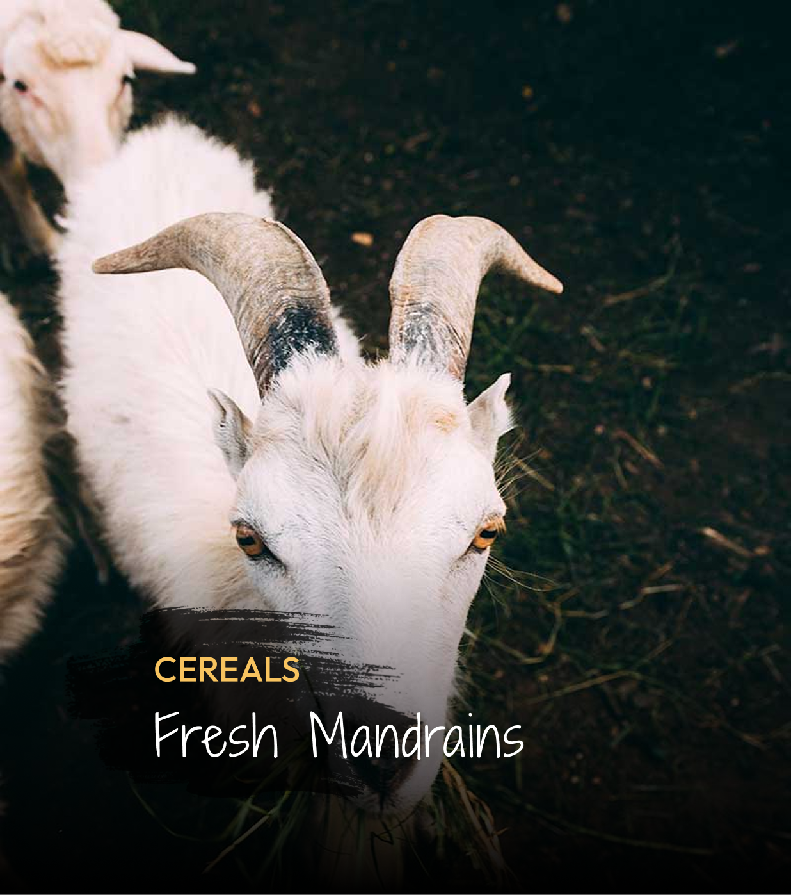

Nama
Budi Santoso
Lokasi
Poncokusumo, Malang
Pesan Petani
Kami memanen sayur dan buah ini dengan sepenuh hati langsung dari tanah Poncokusumo untuk menjamin kesegaran terbaik di meja makan Anda. Terima kasih telah mendukung keberlangsungan hidup petani lokal melalui setiap transaksi yang Anda lakukan.
Cerita Petani
Menyemai Harapan Sejak 1992
Perjalanan kami dimulai dari satu petak lahan kecil di lereng Poncokusumo lebih dari tiga dekade lalu. Sejak tahun 1992, kami telah melewati berbagai perubahan musim dan tantangan alam, namun satu hal yang tidak pernah berubah: dedikasi kami untuk merawat tanah secara jujur demi menghasilkan pangan yang menghidupi. Bagi kami, bertani bukan sekadar menanam benih, melainkan tentang menjaga warisan leluhur dan memastikan setiap helai sayur yang sampai ke tangan Anda membawa kebaikan murni dari alam Semeru. Kini, melalui teknologi, kami bangga bisa terhubung langsung dengan Anda, membawa kesegaran kebun kami lebih dekat ke meja makan Anda.
Galeri Petani




